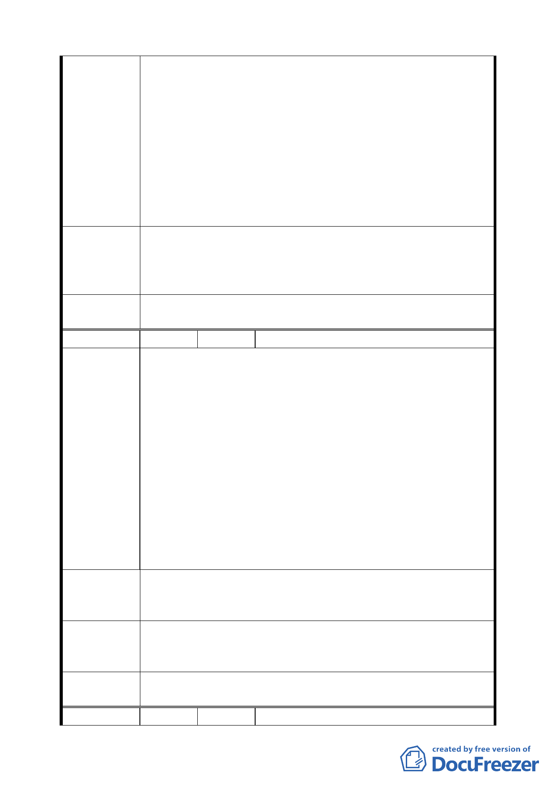

一、市府財政負擔困難，影響徵收。建議放寬建比例，納入
建築４０％比例計算解決民怨問題。
二、未徵收或未實施建比例時，凡面臨私設巷道兩面土地所
有人，若有新申請建照時，必須要取得私設巷道產權人
建議辦法
同意，方能核照。否則由申請人設法解決以買或租方式
解決。最近最高法院有判決為例。希望市府保障產權人
權益，不要逕行核照，也不要變相核照。
92.10.9 補充：
三、建議將榮光公園週圍（榮光公園至自強市場）住三用地
變更為商業區。
94.4.14 專案小組第十二次審查會議：
專 案 小 組 一、二、所提之私設巷道部分，屬私權範圍，市府無法徵收。
結 論 三、同意發展局規劃仍維持為綠地，唯可供車行及指定建築
線，建議變更為商業區部分，擬不予採納。
委 員 會 議 同意依專案小組審查結論辦理。
決議
編 號 ５ 陳情人 高憲章
建議位置：石十
建議理由：
一、據悉本綠地民國 63 年即已依照都市計畫法劃設為十米綠
地實施建築管理；此前膽性的作法，對於居住環境的品
質具備正面提升的意義與功能；並早與目前先進國家多
開闢「綠帶」或「公園」之都市管理模式接軌，足見當
陳情理由
時規劃者的膽遠矚殊為可貴，值得珍惜保留。
二、其次，依照目前每日上午均由當地通稱的金龍市場攤商
租用毗鄰綠地旁的住宅地面層作為市場型態之營業使用
現況觀之；公部門欲依現況就地變更為道路用地，難免
有違都市計畫法第 15 條所規範「改為妨礙目的較經之使
用」之意旨，對於尚未徵收之公共設施環境品質的影響
可想而知，值得各層級主管機關重視。
建請保留原綠地、綠帶之計畫；並請市政府針對金龍市場目
建 議 辦 法 前散置住宅區中的現況，研擬輔導業者措施或另覓機能健全
完整的市場予以安置。
94.4.14 專案小組第十二次審查會議：維持道路用地，唯應確
專 案 小 組 保人行空間之留設，石牌公園南側仍為綠地，可供車行及指
結 論 定建築線。現有攤販建議由市府相關單位輔導安置。
委 員 會 議 同意依專案小組審查結論辦理。
決議
編 號 ６ 陳情人 潘水龍
第 三六 頁，共 49 頁